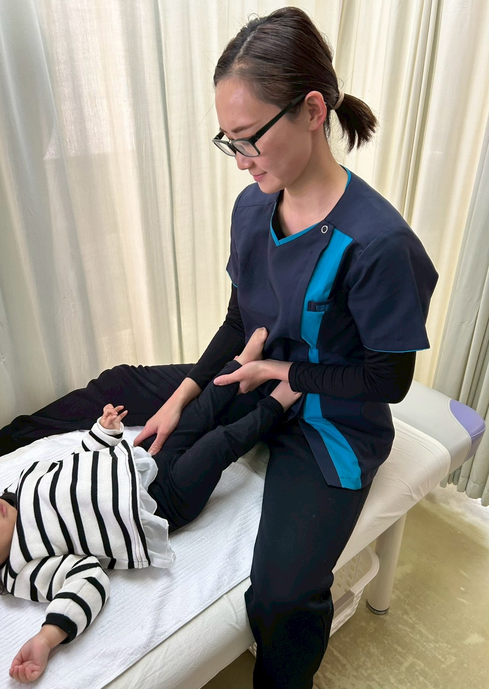
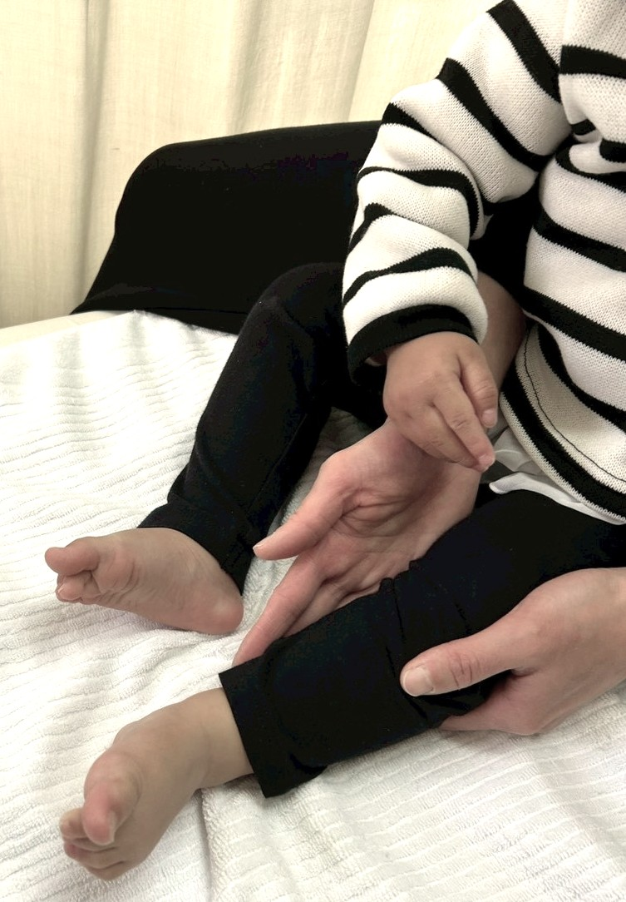
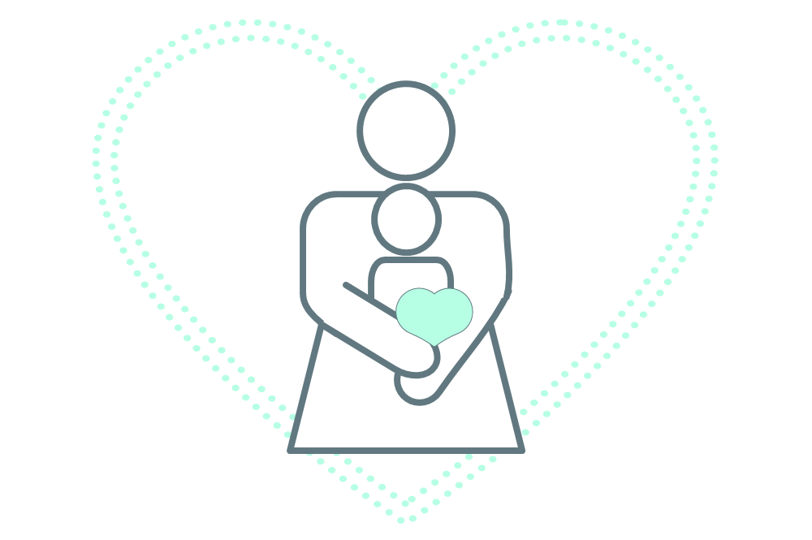
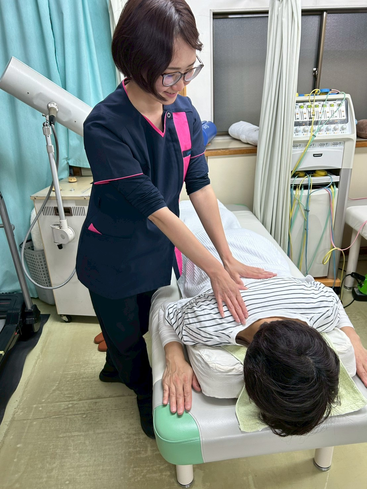

ベビータッチケア(ベビーマッサージ)教室・産後ケア
挨 拶
 新たにベビータッチケア（ベビーマッサージ）教室・産後ケアを開始いたしました。開始する前からも骨盤周囲のお悩み等、ご相談いただく事がありましたが、その度に思う事は“もっと早い時期にご相談いただければできる事もたくさんあるのにな・・・”でした。
新たにベビータッチケア（ベビーマッサージ）教室・産後ケアを開始いたしました。開始する前からも骨盤周囲のお悩み等、ご相談いただく事がありましたが、その度に思う事は“もっと早い時期にご相談いただければできる事もたくさんあるのにな・・・”でした。
産後は産まれたてほやほやの赤ちゃんのお世話で手一杯。自分の事は二の次・三の次だと思いますが、体の事を考えるとママのメンテナンスこそ早めに手を打つことが大切です。私自身も、妊娠・出産を２度経験し、子育て奮闘中です。妊産婦の頃に思った、気軽に行けて価格も抑えられている、安心安全な環境で体のメンテナンスをしてくれる施設はないのかな。を形にしてみました。
「ここにかかれば、ママのケア・ベビーの事もまるっと解決！」
そんな場所を作って行きたいと思います。まずは、尾池接骨院でのベビータッチケア・産後ケアを知って頂き体験してみてください。そして、こんなメニューあったらいいな。こんな事は行なっていないの？と皆さまの声をお聞かせください。皆さまの声を形にして、今はないメニューが加わる事と思います。骨盤ケア等の専門的なお話はもちろんの事、子育てあるあるや子育ての情報等を共有して心も体もリフレッシュ出来る空間を作っていきたいと思います。
ベビータッチケア インスタアカウント こちらをクリック！
↓


ベ ビ ー タ ッ チ ケ ア 効 果 ( 一 部 紹 介 )

お子さまにとって・五感を刺激して、脳の発達を促す
・成長ホルモン分泌
・リラックス感覚を覚えストレス解消
・親子の信頼感
お母さまにとって
・スキンシップにより、オキシトシン分泌を活性化→愛着形成に繋がる
・お子さまを観察する事で、心と体の健康を知る事が出来る
・ベビータッチケア講座に出向く事により、気晴らしや気分転換 等
ベ ビ ー タ ッ チ ケ ア 教 室 受 付 時 間
| 月 | 火 | 水 | 木 | 金 | 土 | 日 | |
|---|---|---|---|---|---|---|---|
| 午 前 9:00～12:30 |
〇 | 〇 | 〇 | × | 〇 | × |
× |
| 午 後 14:00～17:00 |
〇 | 〇 | 〇 | × | 〇 | × | × |
ご相談により、可能な曜日や時間帯もございます
基本的には尾池接骨院の診療と並行して行なう為、同時間に他のご利用者さまが居合わせる可能性がございます
予約制 お電話・公式LINE
日時決定後、お子さまとお母さまが安全に受講できる様、事前ヒアリングシートへの回答をお願いしています
ベ ビ ー タ ッ チ ケ ア 教 室 料 金
２回コース 7,000円 基礎・カスタム(２個程度)テキスト付
３回コース 8,500円 基礎・カスタム(制限なし)テキスト付 [２回コースより1,500円お得]←オススメ
お試ししたい方は定期的に開催しております、体験会やカルチャー受講 をご利用ください
個人レッスン
ベ ビ ー タ ッ チ ケ ア 所 要 時 間
30分程度(前後お仕度時間除く) total 1時間程度
ベ ビ ー タ ッ チ ケ ア 対 象 年 齢
生後３・４か月頃～３歳頃までのお子さまとお母さま
(その他の月齢の方は要相談)
ベ ビ ー タ ッ チ ケ ア 持 ち 物
バスタオル(マットの上に敷いて利用します 必須)
飲み物(母子ともに 必須ではありません)
お出かけの際の、赤ちゃんお世話セット等
ベ ビ ー タ ッ チ ケ ア 服 装

オイルは使用しない為、お洋服の上から行ないます。
指定はありませんが、装飾の少ない、シンプルな物が行ないやすいです。
ベ ビ ー タ ッ チ ケ ア 質 問 等
- ベビータッチケアとは何ですか
- 親子のコミュニケーションツールのひとつです。
お母さま または お父さま がお子さまにマッサージを行なう事で、安心感や親子の温かい関係性を深めます。
また、軽い刺激を与える事で、脳や臓器の発達の手助けをするといわれています。
多くはベビーマッサージと表記されますが、より親しみやすさとオリジナリティを出すために、こちらでは、ベビータッチケアと表記しています。
また、尾池接骨院のベビータッチケアでは、お子さまのケアのみならず、お母さまのケアにも注目しています。
お母さまが疲れ顔でいたら、不思議とお子さまにも伝わってしまうものです。
お母さま自身の労りも、時には必要な事です。産後の体・メンタルのお悩み相談も承ります。
- ベビーマッサージはオイルを使用するイメージだけど、使用しないの？
- 尾池接骨院のベビータッチケアでは、オイルを使用しないタッチケアをレクチャーしています、
理由としては、アレルギーや肌質に関係なく、手軽にベビータッチケアを楽しんでいただき、生活の一部になる様な物にしたいと考えているからです。
- 対象年齢の設定が幅広いけれど、何か意味があるの？
- ベビーマッサージと聞くと、いわゆる“赤ちゃん”に限定されるイメージですが、尾池接骨院のベビータッチケアではお子さまとのふれあいの時間を大事にしてほしいと考えています。2・3歳になると自立心も芽生えますが、まだまだご両親の抱っこやハグが安心感を与えます。
例えば、下の子が産まれて、上の子との時間がなかなか取れなくなってしまった。なんだか最近、癇癪や夜泣きが増えてしまった。等、そんな時、親子のリラックスした時間を作っていただきたいという願いも込めて、対象年齢の設定を広くしています。
- 他のお教室より、価格設定が高い気がする
- 地域のセンター等で行なわれているベビーマッサージは、無料で開催されていたり、オイル代のみ、数百円で行なわれていたりする事もございます。
尾池接骨院のベビータッチケアは、1人ひとりのメニューを作成[カスタムメニュー]：基本的なマッサージの他に事前にお聞きした症状・お悩み(夜泣きが多い・鼻水が出た時の・・・)の手助けとなるマッサージ方法をレクチャー・タッチケアの中で、お子さまを観察させていただき、股関節の動きがしっかりでているか、手足が使えているか専門的な視点からも見させていただきます。
また、お母さまの抱っこの仕方が体を痛める原因になっていないか等、細部に亘ってレッスン致します。全てを考慮して、こちらの価格設定となっております。
- その他メニューの強制的な勧誘はされない？
- 無理な勧誘はいたしません。ですがプランのご提案、ご案内は一度させていただきます。
ご了承くださいませ
産 後 ケ ア
お 母 さ ま の ボ デ ィ ー メ ン テ ナ ン ス メ ニ ュ ー

骨盤周囲や産後の体型等のお悩み、ご相談ください。
産後のケア方法にもタイミングがあります。
計画的にケアしていきましょう。
どのメニューに該当するか不明な場合、カウンセリング後決定する事も可能です。お気軽にお問合せください
ボ デ ィ ー メ ン テ ナ ン ス マ ッ サ ー ジ

1回 2,800円 (15分電気治療＋20分マッサージ/姿勢チェック)
10回コース 28,000円 (15分電気治療＋20分マッサージ/姿勢チェック)
[5回目に10分延長無料特典・初回/最終にて姿勢チェック比較データお渡し]
延長10分毎 1,100円 初回のみ カウンセリング・登録料 2,000円
時間内であればどの部位でも可能。骨盤周囲や産後の体型等のお悩みも解決。
自宅で行なえるセルフケアもレクチャーします。
補足：１回コースでも定期的に通えるのであれば、ご希望により姿勢チェックの撮影、記録します。
産 後 ダ イ エ ッ ト 講 座
講座全5回 10,000円 1講座 30分〜40分程度
分析チャートで原因を見つけ、ダイエットの正しい知識をつける
産 後 ト レ ー ニ ン グ コ ー ス
トライアルクラス5,500円 (回数券10回＋1回無料特典付)(初回1セット)
スタンダードクラス7,700円 (回数券10回＋1回無料特典付)
初回のみカウンセリング・入会料 2,000円
個人指導 個別のプログラムを作成
専用のトレーニングマシーンを使用してのプログラム 産後６ヶ月以降推奨
産 後 ス ト レ ッ チ コ ー ス
6,600円(回数券10回＋1回無料特典付) 1回25分程度
初回のみカウンセリング・入会料 2,000円
個人指導 個別のプログラムを作成、道具を使わずにベッド上で出来る簡単なストレッチを行なう。
骨盤を整えるストレッチも組み込まれています。
受付時間は尾池接骨院 受付時間と同様。 相談の上、時間外でも対応します。
どのメニューも併用可能、メンテナンスマッサージとストレッチコース等、併用がオススメ
産後ケアを行なっている間、月齢に合わせてベビーベッドまたはベビーサークルをご用意いたします。
ご予約時間によっては、お子さまの見守りとしてサポートを付ける事が出来ます。
お子さまと一緒に来院可能です。
ご家族の方とご一緒に来院されて、ご家族が見てくださっているケースもございます。
ハイローチェアやベビーマットの用意もありますので、ご希望の方はお申し付けください。
また、授乳時間と被ってしまう場合等、カーテンで仕切りスペース確保も出来ます。
お子さまのご機嫌が優れない場合は、別日にご予約を取り直す事も可能です。
急なキャンセルでもご連絡いただければ、柔軟に対応いたします。
産 前 ケ ア ( 妊 婦 ) も 承 り ま す 。
利用条件として、安定期を迎えた20週以降の方・医師から行動制限を受けていない方・当院が用意した同意書にサインいただける方
詳しくはお問い合わせください
ベビータッチケア・産後メンテナンスマッサージ、出張します！！
暑い時期で外へ中々出られない・お家でケアしてもらった方が何かと都合良い・・・。
そんな時にご利用ください。
エリア1→500円 (西連合)上之、犬山、コートハウス、西ヶ谷、亀井、尾月、桂台東
エリア2→800円 (東連合)ﾈｵﾎﾟﾘｽ、庄戸、みどりが丘、長倉、上郷、桂台北・中・南1・2丁目
他エリアはお問い合わせください[1,000円～]